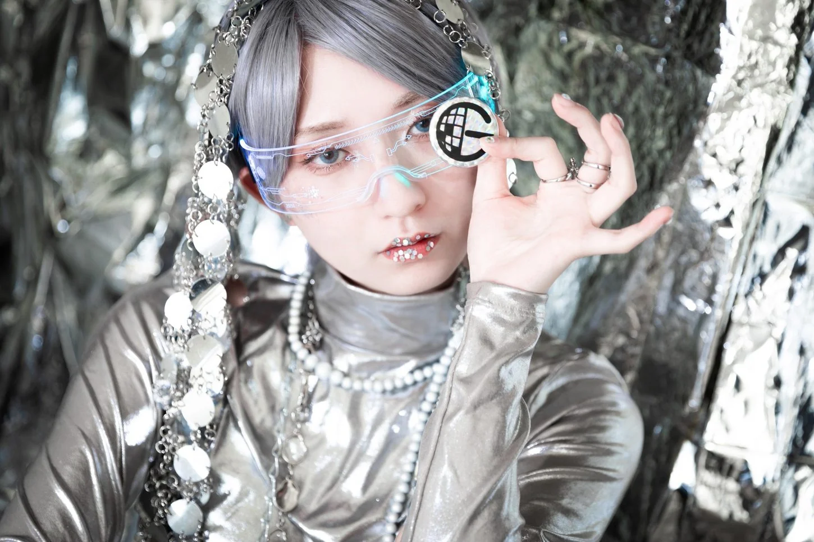

HOLOGRAM
光を纏い、運命を飾る。
FASHION SHOW — JANUARY 31, 2027
✦
THE 10TH ANNIVERSARY COLLECTIONEXCLUSIVE MODEL / RINKO
HOLOGRAM / THE CONCEPTLight becomes
Light becomes
identity.
光は、ひとつの姿を選ぶ。
鏡面が映す無数のきらめき。クリスタルとスパンコールが反射する光は、重なり合いながら新たな輪郭を描き出す。白・金・銀の輝きを纏い、美しさが現実と幻想の境界を越えてゆく。10周年を飾るコレクション「HOLOGRAM」。
THE ART OF REFLECTION / 2027
THE EDITORIAL / 2027The
The
looks.
写真を選ぶと、各LOOKの詳細を表示します。